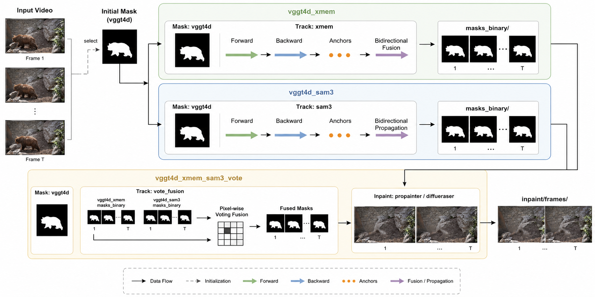

Method
Problem formulation
Given a video \(\{I_t\}_{t=1}^{T}\), our goal is to produce an edited video \(\{\hat{I}_t\}_{t=1}^{T}\) where a target region \(M_t\) is removed at each frame. Following the formulation in modern detection and segmentation, the system can be written as
where \(\mathcal{S}\) is an automatic segmentation module and \(\mathcal{F}\) is an inpainting model.
Pipeline overview
Figure 1 summarizes the full automatic route: (1) VGGT4D yields per-frame dynamic masks as a motion and geometry prior; (2) that prior is fused into a single initialization mask that prompts SAM3 for video object segmentation (VOS), giving refined instance-level masks over time; (3) DiffuEraser performs diffusion-based inpainting on the propagated mask sequence. The design keeps automatic “what moves” discovery from motion cues while aiming for boundary fidelity and temporal stability typical of promptable VOS.

Figure 1 — Full automatic removal pipeline (VGGT4D + SAM3 two-stage VOS + DiffuEraser).
Dynamic mask extraction with VGGT4D
We first apply VGGT4D to obtain a coarse estimate of dynamic regions. By processing frames in temporal chunks and applying motion thresholds, we produce per-frame binary or soft masks \(\{\tilde{M}_t\}\) that highlight potential foreground candidates based on 4D geometry cues.
From dynamic masks to an initialization mask
Because promptable VOS models like SAM3 require an initial object specification, we automatically fuse multiple VGGT4D outputs into a cohesive initialization mask \(M^{\mathrm{init}}\). This step converts noisy, multi-object motion priors into a single, trackable foreground hypothesis.
Mask propagation and refinement with SAM 3
Given the automatically constructed initialization mask \(M^{\mathrm{init}}\), we employ SAM3 as a promptable VOS module to propagate an instance-level mask sequence over the entire video. Concretely, we insert \(M^{\mathrm{init}}\) as an indexed mask prompt at its corresponding frame and run SAM3 tracking both forward and backward in time, producing a first-pass prediction \(\{\hat{M}^{(1)}_t\}_{t=1}^{T}\).
Two-stage automatic anchoring. In the absence of human prompts, promptable VOS propagation can occasionally drift to background regions, yielding near-full-frame false positives or stripe-like bands under large camera motion. To stabilize the foreground while remaining fully automatic, we introduce a two-stage anchoring strategy.
Anchor selection (automatic). From the stage-1 predictions, we select an anchor frame index \(a\) by sampling \(k\) evenly spaced candidate frames (with \(k\) clamped to \([5,7]\) when possible). For each candidate, we measure the stage-1 foreground area fraction. We discard candidates that are (i) near full-screen, (ii) too small to be reliable, or (iii) dominated by thin full-width/full-height stripes. Among the remaining candidates, we choose the anchor with the smallest foreground area (ties broken toward later frames).
Stage-2 re-initialization + prefix merge. We then re-run SAM3 using the stage-1 predicted mask at the anchor frame as a new prompt, producing \(\{\hat{M}^{(2)}_t\}_{t=1}^{T}\). Finally, we form the output mask sequence by a simple prefix replacement:
This design acts as an automatic re-lock of the tracked object at a reliable time while preventing over-correction from propagating through the entire sequence.

Figure 2 — Two-stage automatic anchoring (anchor selection and sequence merge).
Post-processing and alignment
Following propagation, we convert the SAM3 outputs into standardized binary mask sequences and align them with the original video frames. This step prepares the exact frame–mask pairs required by the downstream inpainting stage and generates visual overlays for qualitative evaluation.
Diffusion-based video inpainting with DiffuEraser
Finally, we inpaint the masked regions using DiffuEraser. This module consumes the original frames \(\{I_t\}\) and refined masks \(\{M_t\}\) to synthesize the final edited video \(\{\hat{I}_t\}_{t=1}^{T}\). The quality of this generative process relies heavily on diffusion priors (e.g., latent diffusion) and conditional control mechanisms.
Automatic baseline: VGGT-only + DiffuEraser
To isolate the value of the SAM3 refinement step, we also consider an automatic baseline that bypasses SAM3 entirely, feeding raw VGGT-derived masks \(\{\tilde{M}_t\}\) (aligned to every frame, with temporal padding when the motion prior comes from a shorter window) directly to DiffuEraser prior to inpainting. While fully automatic, this VGGT-only variant is often ill-suited for strict single-object removal compared to the full pipeline.